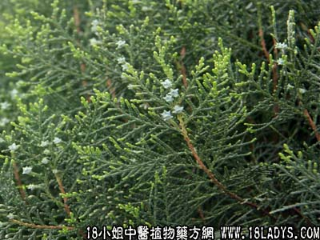

扁柏叶(中草药名称:侧柏)(中药大全科目:柏科)

别名：侧柏叶。
植物名：侧柏。
生长环境：本品为常绿乔木，常栽培于村庄屋旁或公共场所。
分布：原产我国东北，现各地均有，广东各县均有栽培。
入药部分：叶。
采集期：全年采叶、根、秋冬采果实。
自采地点：家种。
性味：性凉、味苦涩、气微香。
功能：清热散毒、破瘀、止血、止咳。
主治、用量和用法：1、苦伤吐血、肺燥咳血、血热妄行、衄血、便血、眼热、白浊：独用鲜叶3钱至1两，或独用干叶3钱至5钱，清水适量，煎服；2、苏痨撞红，配伍用；3、烫伤：用鲜叶擂烂，加适量蛋白调敷患处。每日换药2至3次；4、皮肤痕痒流水：用干叶研末，掺患处。
验方1：（治血热妄行方）生白花蟛蜞草4两，生扁柏叶5钱，同擂烂，取汁，加蜜糖2两，隔水炖2小时，不拘时做一次温服，每日一次，连服3至5天。
（方解）本方生扁柏凉血清热；生白花蟛蜞草平肝清心，因其汁黑，取以黑治红之义，故能凉血止血；配以蜜糖之甘润，清心润肺，取其“甘以缓之”之义。生用者，取其去火也。热谣于内，迫血妄行，用之恰当。
（方歌）血热妄行扁柏医，白花蟛蜞草共维持，生用擂汁炖蜜服，甘凉清润法可师。
验方2：（治苦伤吐血方）五爪龙根1两、红菱根5钱、千白花灯笼根5钱、红丝线5钱、干扁柏叶5钱、清水四碗，煎成一碗，一次服。
（方解）苦伤咳血，多由劳倦积瘀，血阻清道而成，方中五爪龙根行气活血，白花苦灯笼根去瘀，红菱根开郁；红丝线清金宁肺；干柏叶止血。凡气伤积瘀者，用本方治疗，其效卓著。
（方歌）苦伤咳血五爪龙，红菱白花苦灯笼，红丝扁柏能止血，宁肺清金效最隆。
验方3：（治眼热方）干扁柏叶5钱、干犁头草5钱、蜜枣5钱、清水二碗，煎成一碗，不拘时服。
（方解）本方犁头草为轻浮上升之品，能消风清热，干扁柏凉血去瘀，瘀去肿消，风散热除。对于风热眼患者，用之有效。
（方歌）眼热肿红视不清，犁头草性能轻升，加入清凉侧柏叶，肿消热散目能明。
附录：（实）用盐腌咸，止咳除痰，用1钱，清水煎服。
（根）治劳伤咳血，干用5钱至1两，清水煎服。
本文解释权归中药大全，本文地址：https://www.daquan.com/post/1612.html